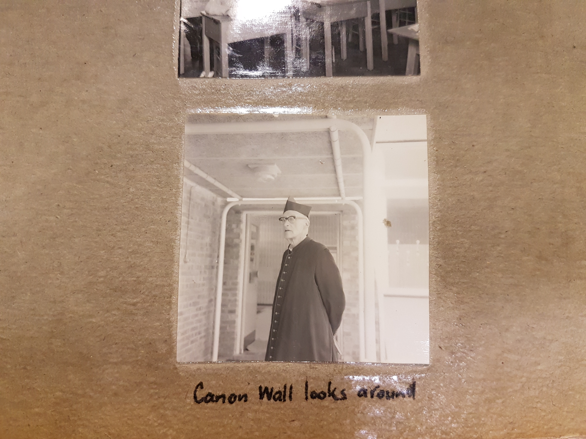
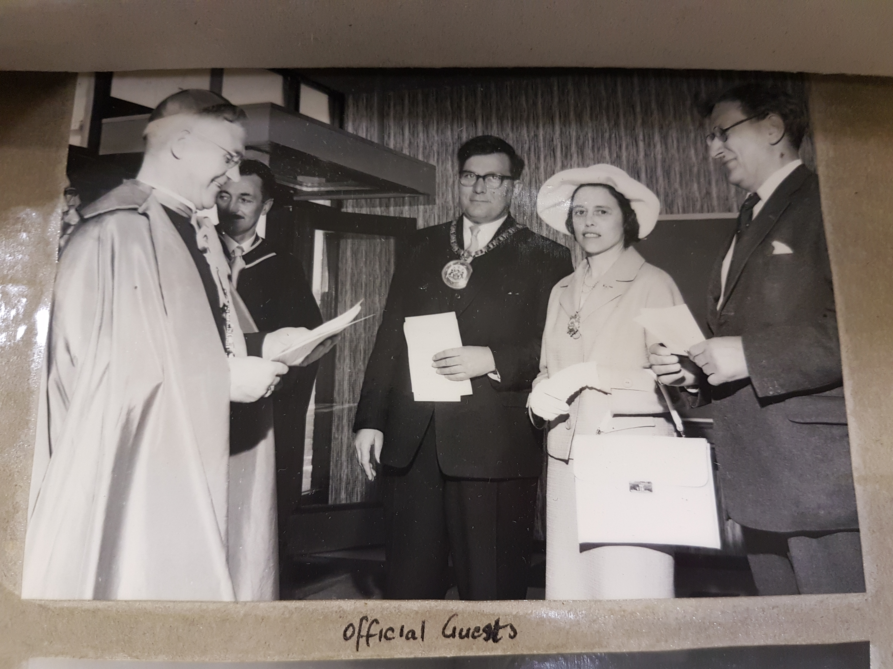

The School's Time-line in Pictures
Scroll and take a trip down memory lane
June 1962-Opening Ceremony

First School Diary 1962
The School's Opening Invitation Letter

The Main Block Building
Newspaper Article on the opening

The Practical Block Building

Mr G. Grimshaw-Headmaster
Students at the First Assembly
The Archbishop Addressing the First Assembly
Students lining up for the First Assembly
The First Members Of Staff

Open Day Newspaper Article

The Procession and Consecration Of the School
The Archbishop Placing the Crucifix

Canon Wall Looking Around

Archbishop Grimshaw during the Procession

The Procession taking place on the playground
Archbishop Grimshaw celebrating Mass

The First School Mass being celebrated

Guests at the Opening
The Official School Guests
The Blessing and Opening Mass Ceremony Booklet
Some Other Photographs of the Archives
School Diary Cover 1964-5
Spring Term Prefects 1963
John 3:16-"For God so loved the world that he gave his one and only Son, that whoever believes in him shall not perish but have eternal life."